Exercicis amb els resultats (part I)
En la BD factura , connectant com a usuari factura_alu :
Ex_1 Traure tota la informació dels pobles.
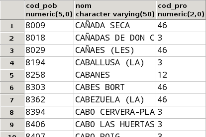
Un total de 1663 files
Ex_2 Traure el codi postal, el nom i l'adreça, per aquest ordre, de tots els venedors..
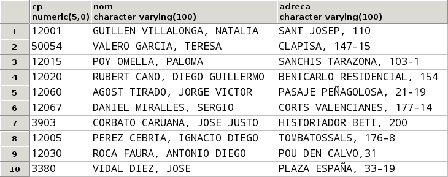
Ex_3 Traure el codi d'article, la descripció, preu i preu incrementat en un 5%, de tots els articles.
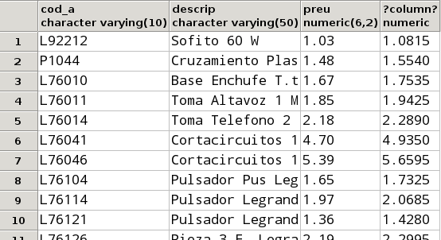
Un total de 812 files
Ex_4 Traure la informació dels clients amb el següent format (ha d'anar tot en una columna):
Damborenea Corbato, Alicia. CALLE MADRID, 83 (12425)
Fixeu-vos que està tot en una columna, i per tant haureu de concatenar de la forma adequada. Fixeu-vos també que en en el nom només les inicials estan en majúscules
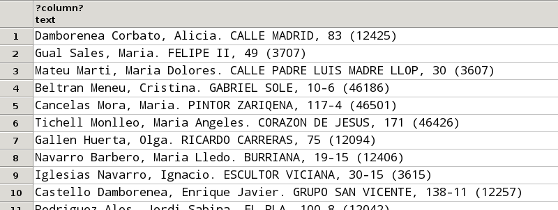
Un total de 49 files
Ex_5 Traure el num_f, data i cod_ven de les factures amb les següents capçaleres respectivament: Número Factura , data i Codi Venedor.
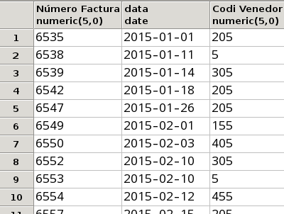
Un total de 105 files
Ex_6 Donar àlias als camps que ho necessiten de la taula ARTICLE.
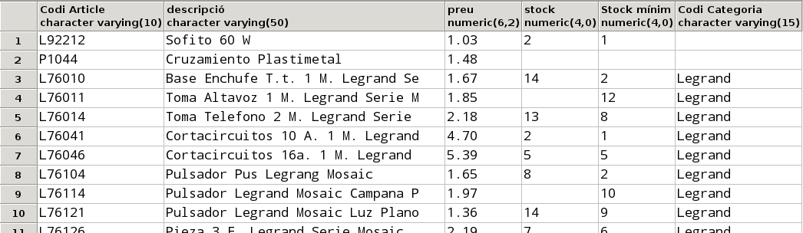
Un total de 812 files
Ex_7 Traure els clients de la ciutat amb codi 12309.
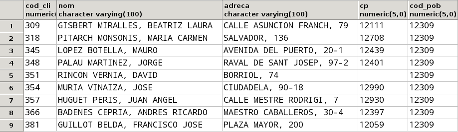
Ex_8 Traure totes les factures del mes de març de 2015.
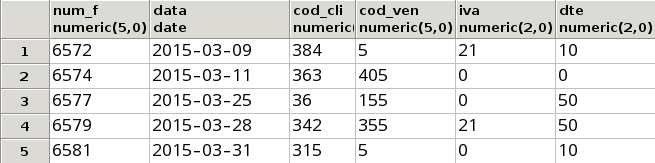
Ex_9 Traure tots els articles de la categoria BjcOlimpia amb un stock entre2 i 7 unitats.
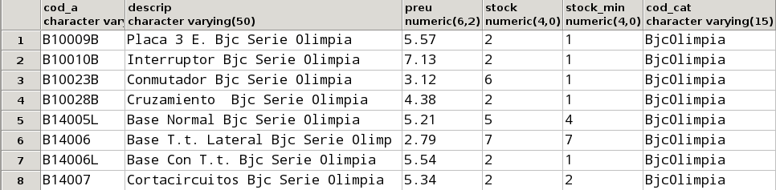
Ex_10 Traure tots els clients que no tenen introduït el codi
postal.
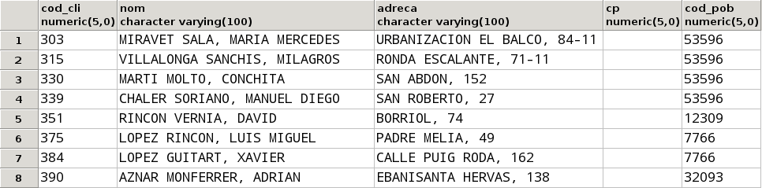
Ex_11 Traure tots els articles amb el stock introduït però que no tenen introduït el stock mínim.
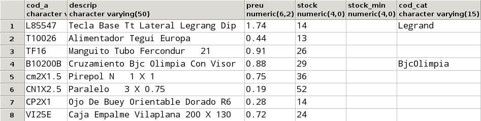
Ex_12 Traure tots els clients , elprimer cognom dels quals és VILLALONGA.
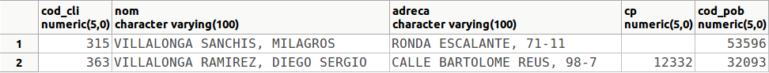
Ex_13.a Modificar l'anterior per a traure tots els que són VILLALONGA de primer o de segon cognom.
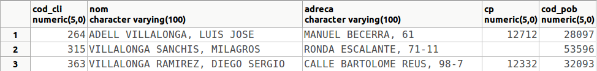
Ex_13.b Modificar l'anterior per a traure tots els que no són VILLALONGA ni de primer ni de segon cognom.
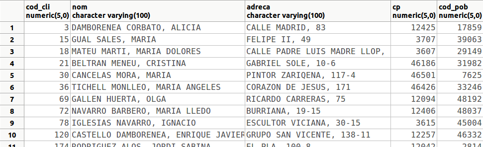
Un total de 46 files
Ex_14 Traure els articles "Pulsador " (la descripció conté aquesta
paraula), el preu dels quals oscila entre2 i 4 € i dels quals tenim un
stock estrictament major que el stock mínim.
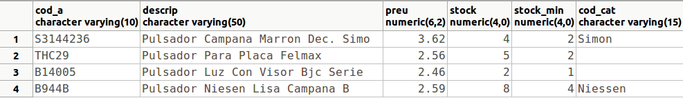
Ex_15 Comptar el nombre de clients que tenen el codi postal nul.
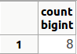
Ex_16 Comptar el número de vegades que l'article L76104 entra en les línies de factura, i el número total d'unitats venudes d'aquest article. Només us fa falta la taula LINIA_FAC.
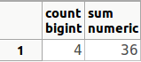
Ex_17 Traure la mitjana del stock dels articles.
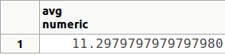
Ex_18 Modificar l'anterior per atenir en compte els valors nuls, com si foren 0. Us vindrà bé la funció COALESCE que converteix els nuls del primer paràmetre al valor donat com a segon paràmetre (si és diferent de nul, deixa igual el valor). Per tant l'heu d'utilitzar d'aquesta manera: COALESCE(stock,0)
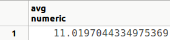
Ex_19 Comptar quantes factures té el client 375
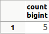
Ex_20 Calcular el descompte màxim , el mínim i el descompte mitjà de les factures.
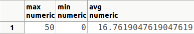
Ex_21 Comptar el número de pobles de cada província (és suficient traure el codi de la província i el número de pobles).
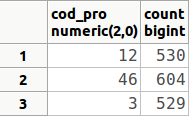
Ex_22 Comptar el nombre de clients en cada poble i codi postal.
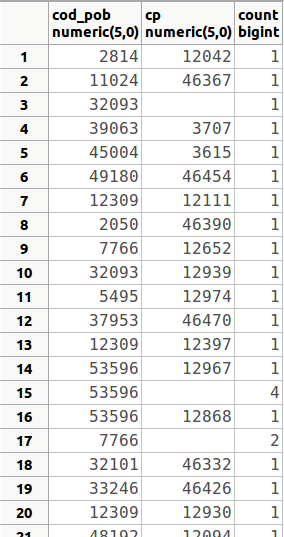
Un total de 45 files
Ex_23 Comptar el número de factures de cada venedor a cada client.
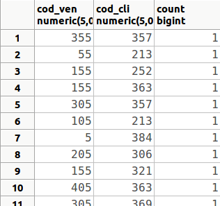
Un total de 96 files
D'aquestes 96 files, relativament poque tenen un valor diferent de 1 en el número de factures: la fila 29 (455, 30, 2) o la fila 34 (5, 342, 3)
Ex_24 Comptar el número de factures de cada trimestre. Per a poder traure el trimestre i agrupar per ell (ens val el número de trimestre, que va del 1 al 4), podem utilitzar la funció TO_CHAR(data,'Q').
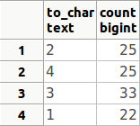
No apareix ordenat, i vol dir que en el trimestre 2 hi ha 25 factures, en el trimestre 4 hi ha 25, en el trimestre 3 hi ha 33 i en el trimestre 1 hi ha 22
Ex_25 Calcular quantes vegades s'ha venut un article, la suma d'unitats venudes, la quantitat màxima i la quantitat mínima.
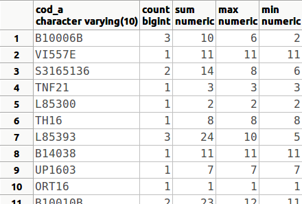
Un total de 399 files
Ex_26 Comptar el número d'articles de cada categoria i el preu mitjà.
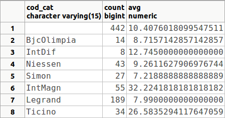
Ex_27 Calcular el total de cada factura, sense aplicar descomptes ni IVA. Només ens farà falta la taula LINIES_FAC , i consistirà en agrupar per cada num_f per a calcular la suma del preu multiplicat per la quantitat.
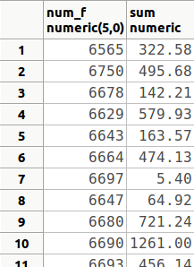
Un total de 105 files
Ex_28 Calcular la mitjana de quantitats demanades d'aquells articles que s'han demanat més de dues vegades. Observeu que la taula que ens fa falta és LINIA_FAC, i que la condició (en el HAVING) és sobre el número de vegades que entra l'article en una linia de factura, però el resultat que s'ha de mostrar és la mitjana de la quantitat.
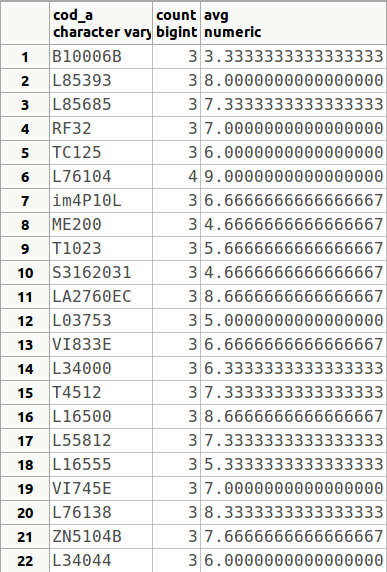
Ex_29 Traure els pobles que tenen entre 3 i 7 clients. Traure només el codi del poble i aquest número
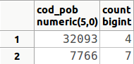
Ex_30 Traure les categories que tenen més d'un article "car" (de més de 100 €). Observeu que també ens eixirà la categoria NULL, és a dir, apareixerà com una categoria aquells articles que no estan catalogats.
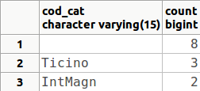
Ex_31 Traure els clients que tenen més d'una factura, amb el número de factures.
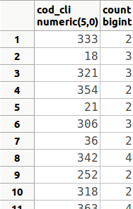
Un total de 33 files
Ex_32 Modificar l'anterior per a traure els clients que tenen més d'una factura en el primer trimestre.
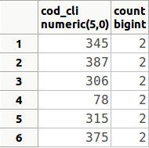
Ex_33 Calcular el total de cada factura d'aquelles factures que tenen 10 o més línies de factura, sense aplicar descomptes ni IVA (com la consulta Ex_26), i també aplicant el descompte que consta en la línia de factura (no el descompte de tota la factura). Tindrem el problema que el valor NULL és especial, i en operar amb qualsevol altre valor donarà NULL. En aquest cas clarament l'hem de considerar com un descompte 0. Podeu utilitzar una funció que substitueix els valors nuls trobats en el primer paràmetre, pel segon paràmetre d'aquesta manera: COALESCE(dte,0)
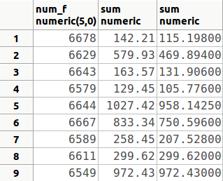
Ex_34 Traure tots els clients ordenats per codi de població, i dins d'aquestos per codi postal.
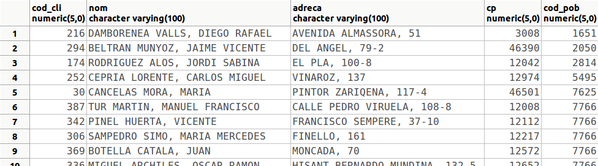
Un total de 49 files
Ex_35 Traure tots els articles ordenats per la categoria, dins d'aquest pel stock, i dins d'aquest per preu (de forma descendent)
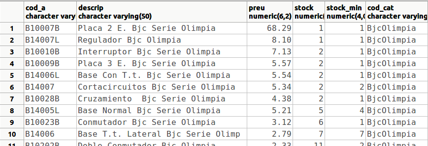
Un total de 812 files
Ex_36 Traure els resultats de la consulta 6.33 ordenats pel total de la factura quan ja s'ha aplicat el descompte, de forma descendent.
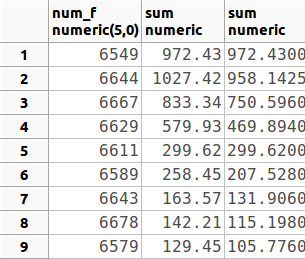
Ex_37 Traure tots els articles ordenats per la diferència entre el stock i el stock mínim de forma descendent. Com que en moltes ocasions el stock o el stock mínim és nul, hem de considerar en aquestos casos com 0. Per tant hem de tornar a utilitzar la funció COALESCE(stock,0) (i també per al stock mínim).
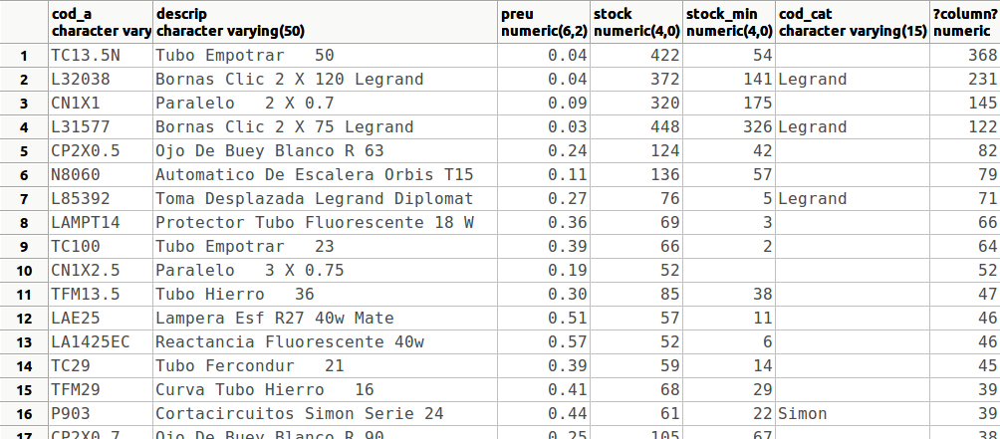
Un total de 812 files
Ex_38 Traure els codis de venedor amb el número de factures venudes en el segon semestre de 2015, ordenades per aquest número de forma descendent
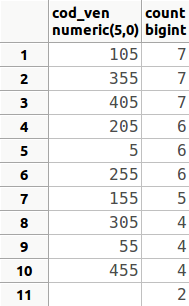
Ex_39 Traure els venedors que han venut alguna cosa el mes de gener de 2015.
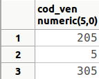
Ex_40 Traure els diferents tipus d'IVA que s'han aplicat a les factures de cada venedor, també durant el mes de gener de 2015
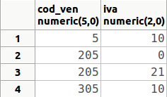
Ex_41 Traure els diferents caps de venedors (eviteu que aparega el valor nul)
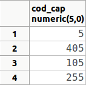
Ex_42 Traure els diferents descomptes que s'han aplicat als articles, el codi dels quals comença per SAT. Traure tant el codi d'article com el descompte.
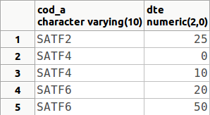
Ex_43 Comptar en quantes poblacions tenim clients
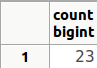
Ex_44 Traure tota la informació dels dos articles més cars.
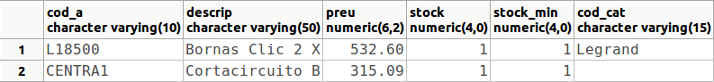
Ex_45 Traure el codi de les tres ciutats amb més clients
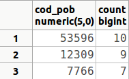
Ex_46 Traure el venedor que ha venut menys factures
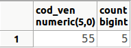
Ex_47 Traure les tres factures més cares (sense comptar els descomptes)
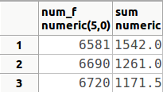
Ex_48 Modificar l'anterior per a traure totes les factures, excepte les 3 més cares.
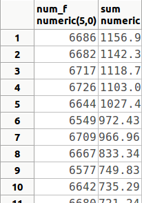
Un total de 102 files
Ex_49 Crear una taula anomenada ARTICLE_999x , on 999 han de ser les 3 últimes xifres del DNI, i x la lletra del teu NIF, que siga una còpia de la taula ARTICLE, però substituint els valors nuls de stock i stock_min per zeros.
El resultat ha de ser la creació de la taula. Si consulteu el seu contingut ha de ser el següent:
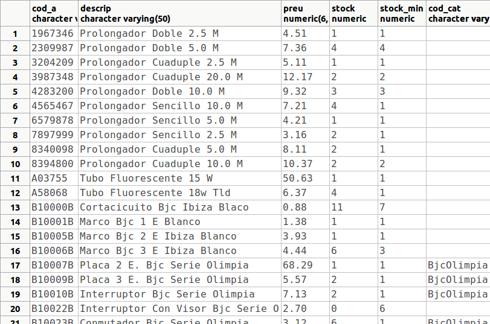
Untotal de 812 files
Ex_50 Utilitzar la taula anterior per a traure el stock màxim, el mínim i la mitjana de stocks. Observeu que si utilitzàrem la taula ARTICLE, els resultats no serien els mateixos (excepte el màxim), sobretot la mitjana, ja que els valors nuls no entrarien en els càlculs d'aquesta mitjana.
Llicenciat sota la Llicència Creative Commons Reconeixement NoComercial CompartirIgual 3.0